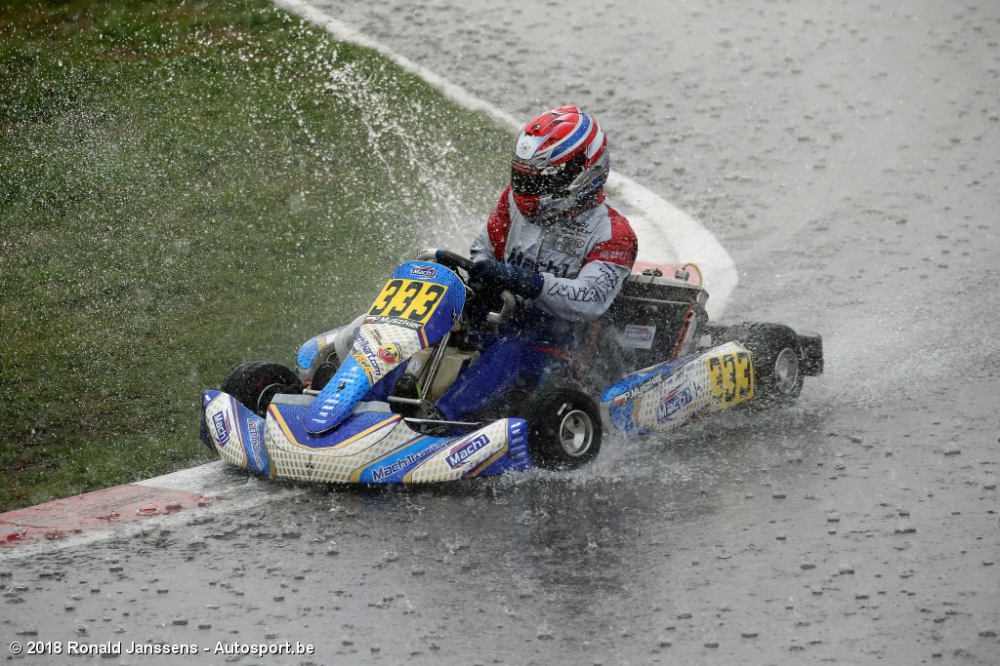
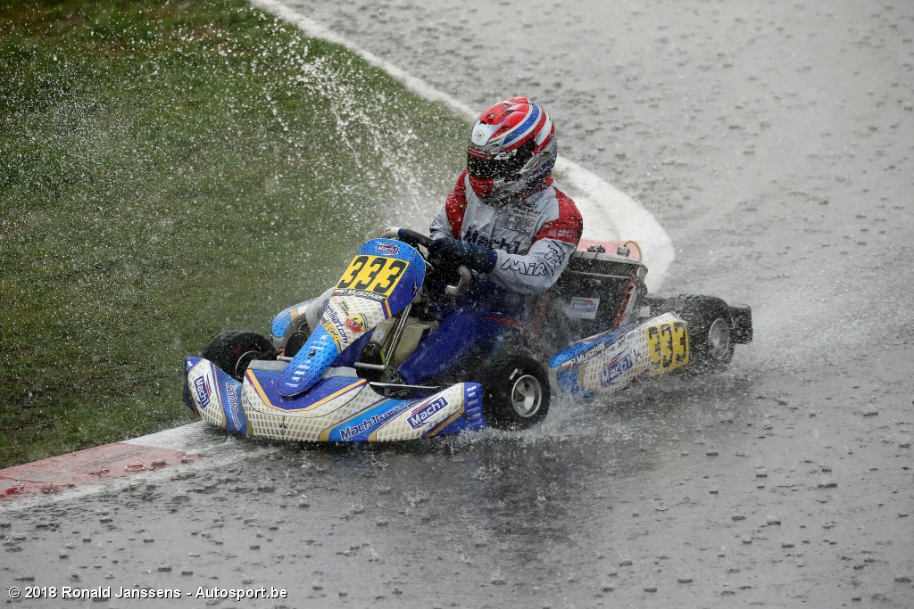
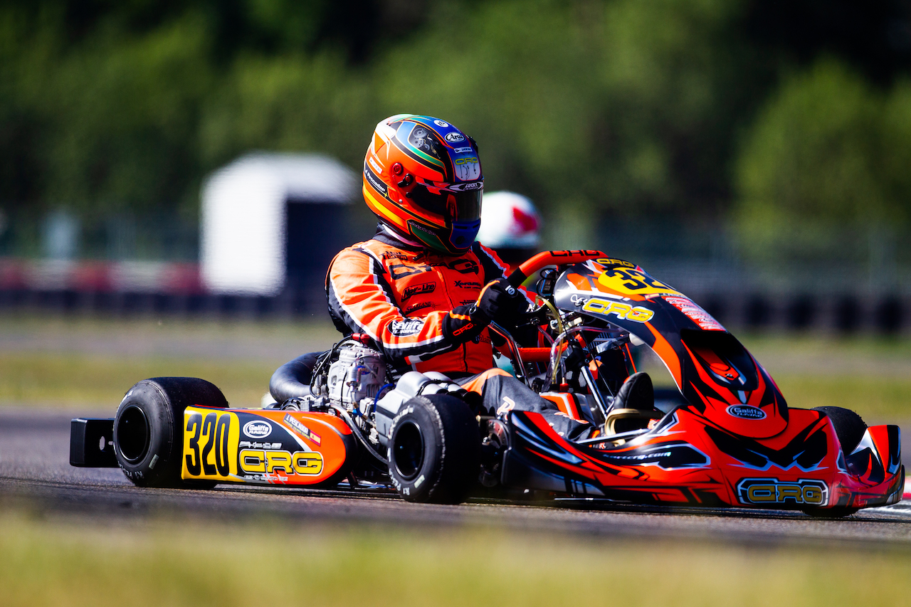
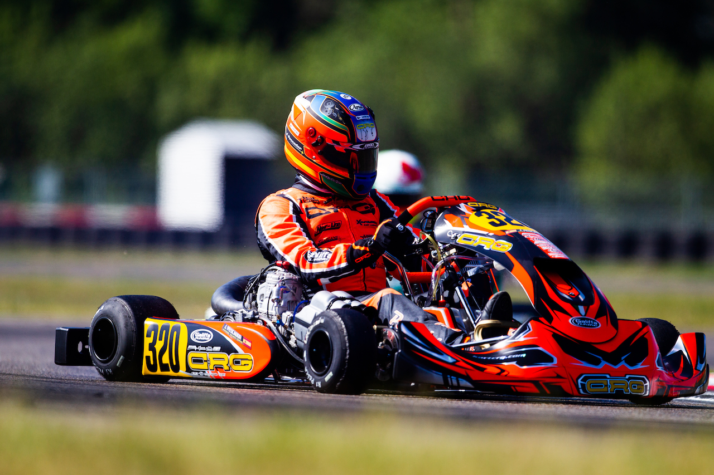

Evenementen
Hier vindt u alle evenementen met de betreffende informatie waar wij aanwezig zullen zijn. Dit zijn tot nu toe alleen maar wedstrijden, maar wie weet zullen we ook op andere evenementen aanwezig zijn als team!
NK | TT Junior Assen | 21 januari
Het nieuwe seizoen gaat van het Nederlands Kampioenschap gaat van start op het prachtige circuit van Assen, de TT Junior track. Dit circuit is langer dan 1 kilometer en kent een topsnelheid van meer dan 110 kilometer per uur! Kortom, een snel, lang, technisch en moeilijk circuit allemaal in 1! Circuit Assen
NK | Lelystad | 28 januari
Het circuit van Lelystad eist veel techniek en een hele hoop conditie voor de tweede ronde van het Nederlands Kampioenschap. Een kort recht stuk en vervolgens moeilijke bochtencombinaties die op je te wachten staan. Een uitdaging, maar voor onze rijders valt dat reuze mee ;). Circuit Lelystad
NK | Venray | 18 febuari
Venray is een prachtig circuit die functioneert als een kart- en racebaan, en daar gaan wij de derde ronde tegemoet van het NK! Venray staat bekend om de goede combinatie van snelheid en bochten, je hebt namelijk hele snelle bochten op het circuit, maar ook bochten die wat langzamer zijn. Circuit Venray
EK | Whilton Mill | 3 maart
Een iconisch circuit waar wij de eerste ronde mogen aftrappen van het Europees Kampioenschap!! Whilton Mill is een uiterst snel circuit waar je bij bepaalde bochten hard moet remmen, techniek en zoveel mogelijk snelheid behouden staat hier vooraan, en dat garandeert spektakel!! Circuit Whilton Mill
EK | Spa-Francorchamps | 24 maart
Het prachtig kartcircuit van Spa wat precies in het midden ligt van het Formule 1 circuit! Een geweldig circuit waar wij de tweede ronde van het Europees Kampioenschap gaan rijden. Dit circuit kent een enorme snelheid tussen de 80 en 110 kilometer per uur, en bevat een hele lastige laatste bocht! Circuit Karting Spa
NK | Strijen | 21 april
De enige buitenbaan in de buurt waar wij het Nederlands Kampioenschap rijden, dat scheelt weer met de benzinekosten :). Strijen staat bekend om de lastigste baan van Nederland wegens de ongelooflijk lastige bochtencombinaties, één kleine fout is fataal voor je rondetijd. Circuit Strijen
EK | Ostricourt | 12 mei
De laatste ronde van het Europees Kampioenschap verrijden we op het prachtige circuit Ostricourt, gelegen in Frankrijk! Dit circuit heeft kent een enorme snelheid en heeft één van de beste bochtencombinaties die je ooit zal zien op een circuit. Dit circuit eist veel vermogen van de karts! Circuit Ostricourt
NK | Oldenzaal | 26 mei
Het circuit van Oldenzaal is zeker niet de langste tussen het lijstje, maar wel een mooi en leuk circuit. Een compleet ander circuit die varieert met snelle en wat minder snelle bochten, maar slome bochten kent het circuit niet. Een zeer leuke baan voor het Nederlands Kampioenschap! Circuit Oldenzaal
NK | Berghem | 9 juni
Berghem is het snelste circuit van Nederland met de snelste bochtencombinaties. Op Berghem halen onze karts met zeer sterke motoren een topsnelheid van bijna 115 kilometer per uur! Berghem is een circuit waar de coureurs zeer consistent moeten rijden om kans te maken! Circuit Berghem
WK | PFI | 14 juli
Dit jaar gaat RK-Racing naar het Wereld Kampioenschap!!! We mogen dit geweldige toernooi aftrappen op het MEGA circuit van PFI, gelegen in Engeland. PFI is maar liefst 1382 meter lang, wat ongekend is. De lengte in combinatie met de hoogteverschillen maakt circuit zeer uniek! Circuit PFI
NK | Landsard | 4 augustus
De laatste ronde van het Nederlands Kampioenschap wordt verreden op het circuit van Landsard! Dit circuit kent een enorme snelheid, en je hebt nauwelijks tijd op even te rusten door de snelle en achtereenvolgende bochtencombinaties! Dit circuit eist uiterste conditie en concentratie! Circuit Landsard
WK | Genk | 15 september
Genk staat ook wel bekend als 'uitdagend', gelegen in België. Dit is het thuis circuit van Max Verstappen en één van de bekenste circuits ter wereld! Geen wonder dat we de tweede ronde van het WK op Genk rijden. Een topsnelheid van 120 kilometer per uur staat garant voor een extreme race! Circuit Genk
NK | Kerpen | 20 oktober
Kerpen is een prachtig circuit gelegen in Duitsland in een prachtige natuuromgeving! Kerpen is de beste baan van Duitsland, maar ook de meest uitdagende. Snelle bochten, veel kerb en een uitstekende techniek heb je nodig als je hier wilt winnen. Een prachtig circuit voor het WK! Circuit Kerpen
NK | Speed Park Brazil | 10 november
De naam zegt het al, het Speed Park circuit ligt in Brazilië waar we de laatste race van het Wereldkampioen mogen rijden, maar tevens en helaas ook onze laatste race van het seizoen. We hopen op een winst met onze topcoureurs zodat we het seizoen een geweldige afsluiting kunnen geven! Circuit Speed Park


 

 
